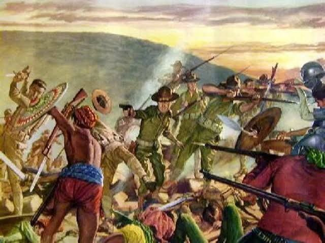

Dumating ang mga Kastila sa bansa taglay ang tatlong Gs – GOD, GOLD at GLORY. Dumating sila na ang pangunahing layunin ay ihasik ang Kristiyanismo, maghanap ng ginto at upang lalong mapabantog sa pamamagitan ng pagdaragdag ng kanilang nasasakop.
Mahahati ang panitikan sa dalawa sa panahong ito: una ay pamaksang pananampalataya at kabutihang-asal at ang ikalawa ay ang panitikang panrebolusyon.
Panitikang Pamaksang Pananampalataya at Kabutihang-asal Dahil sa pananampalataya ang pangunahing pakay ng mga Kastila, karamihan sa mga unang akdang nalikha sa panahong ito ay halos paksang pananampalataya. Halimbawa sa mga ito ay ang mga
uri ng dulang senakulo,santa cruzan at tibag; tulang gaya ng mga pasyong inaawit. Sila rin ang nagpakilala ng konseptong maharlika o dugong bughaw sa mga Pilipino na mababatid sa mga akdang awit na ang mga pangunahing tauhan ay mga hari,
reyna, prinsipe at prinsesa – isang patunay ang awit na Florante at Laura ni Balagtas at mga dulang duplo at karagatan. Sa panahong ito, piling-pili lamang ang nakasusulat sapagkat wikang Kastila lamang ang kinikilala sa ganitong larangan.
Kaunti lamang ang nakasusulat sa Kastila dahil sa pagpipigil, sa nadaramang takot at pagiging madamot ng mga Kastila. Sa panahong ito nalimbag ang pinakaunang aklat sa bansa; angDoctrina Christiana na nalimbag noong 1553 na isang panrelihiyong
aklat. Ang pasyon ang isa sa patulang anyo na makarelihiyon. Samantalang ang mga dula sa nama’y ang mga senakulo, Santa Cruzan, at tibag. Ang mga dulang Moro-Moro naman ay pumapaksa sa tagumpay ng mga Kastila, isinasadula rito ang mga
himagsikan sa pagitan ng mga sundalong Kastila at mga Muslim sa Mindanao at sa wakas ng dula, palaging nagwawagi ang Kastila at talunang niyayakap ng mga Muslim ang Kristiyanismo. Nauso rin angcarillo o mga dulang puppet na yari sa karton
na gumalaw sa likod ng isang mailaw at puting tela. Ang mga panitikan namang ukol sa kabutihang-asal ay ang Urbana at Feliza ni Padre Modesto de Castro. 2.Panitikang Rebolusyonaryo at Sedisyoso Sa ikalawang bahaging ito ng kasaysayang
pampanitikan sa panahon ng pananakop ng Kastila, karamihan sa mga panitikang nalikha ay may diwang rebolusyonaryo at nagbukas sa kamalayang Pilipino sa di-makataong pagtrato sa kanila ng mga Kastila at nag-uudyok na kalabanin ang pamahalaan.
Dahil sa labis na pang-aalipin at pang-aalispusta at masidhing diskriminasyon ng mga Kastila sa mga Pilipino; nagsilunsad ng mga kilusan ang iilang Pilipinong hindi na sumasang-ayon sa pamamalakad ng mga prayle at pamahalaang Kastila.
Nagsisulat ang mga Pilipino sa panahong ito ng mga panitikang nagrerebolusyon. Nalathala ang mga pahayagang propagandista na pinangunahan ng La Solidaridad noong Pebrero 19, 1889 na naglalayong“matamo ang pagbabagong kailangan ng bansang
bilang tugon sa kalagayang panlipunan at pang-ekonomiya, maisiwalat ang malubhang kalagayan ng bansa sa ilalim ng pamamalakat ng mga Kastila at upang pairalin ang kalayaan at demokrasya.” Dahil sa mahigpit ang pamahalaan, nagsitago ang
mga manunulat sa ilalim ng iba’t ibang sagisag-panulat upang maprotektahan ng mga sarili laban sa mapang-alipustahang Kastila at upang patuloy na makasulat. Ang pambansang bayaning si Dr. Jose P. Rizal na may sagisag-panulat na Laong Laan
ay naging bahagi ng pahayagang La Solidaridad; at ang may-akda ng mga nobelang Noli Me Tangere at El Filibusterismo na unang nalimbag at nalathala sa Espanya at naging mitsa sa mga rebolusyonaryong Pilipino na mag-aklas laban sa mga Kastila.
Sumulat din si Rizal ng mga sanaysay gaya ng Hinggil sa Katamaran ng mga Pilipino at Sa Mga Kabataang Dalaga sa Malolos.
Reference: http://kadipanvalsci.blogspot.com/2010/08/panitikang-filipino-sa-ibat-ibang.html